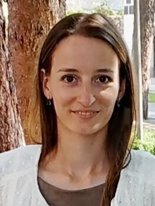

PhD student in language acquisition

I am a PhD student in the ACQDIV Lab, supervised by Sabine Stoll, at the Institute for the Interdisciplinary Study of Language Evolution. I'm working on prelinguistic vocalisations, the acoustic regularities they exhibit and the earliest meanings they convey. As a NCCR internal collaborator (NCCR Evolving Language), interdisciplinarity is at the center of my research. Here is a video on the theoretical background of our group (Animal Meaning): see the video on Youtube. In this group, together with Animal Behavior experts, we adopt a comparative approach towards vocalisations and volubility across species.
You can reach me at: margot.berthelin@uzh.ch , or find my code on GitHub.
tbc...
I like to sew clothes! tbc